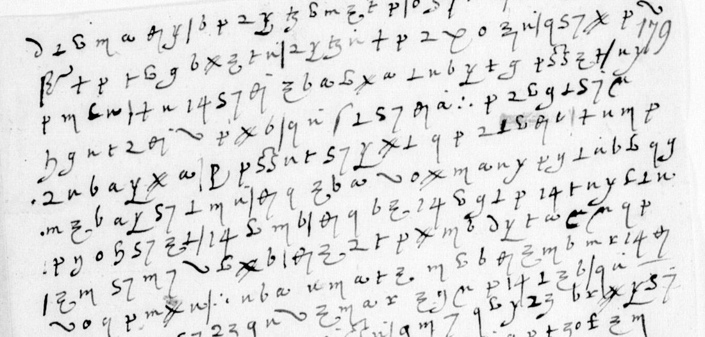
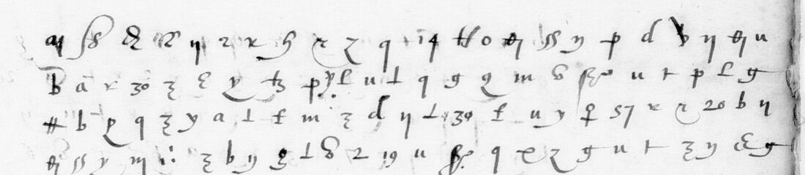

At a glanceKnown key applied · partial, 3,719 of 4,079 signs (91.2%)
- The letters
- Two unsigned, unaddressed slips wholly in cipher, from 1586, both naming Iehan Durant and La Roussière. A six-page despatch wholly in cipher, autumn 1586, to Henri III and probably from Marshal Matignon.
- Where
- Bibliothèque nationale de France, fr. 15572 f. 276, fr. 15571 f. 179 and fr. 15573 ff. 379–381 (Gallica). The two slips were part of catalogue item 12 with the Mayenne–Forget despatches, which are in other ciphers.
- The cipher
- Matignon’s Cipher-3: invented signs and figures for letters, a few signs for whole words (de, la, que, et) and a null.
- How it was deciphered
- Satoshi Tomokiyo published a partial table of the key. alejandrozarco checked it against a sibling leaf and its contemporary decipherment, then read both slips sign by sign, twice and independently. f. 179 also carries Tomokiyo’s own decipherment, written over his image of it.
- What it says
- On f. 276, Catholic factions round La Roussière, governor of Fontenay, and a disputed priory. On f. 179, a plan to attack Pons, sickness in the army, and Lansac for the fleet. The despatch reports on the Garonne trade the Huguenots tax, Castillon, Marmande and the King of Navarre.
- Still open
- On the slips, three one-sign code words, two blots and a few faint signs. In the despatch, five rare code signs and about a tenth of the signs, mostly names and misread signs.
- Credit
- The slips are alejandrozarco’s work (pull request 25, October 2026); the despatch is Brett Burford’s (issue 44, October 2026). Both were reviewed and re-measured here.
- Other ciphers
- The Mayenne–Forget despatches filed with these slips use Cipher-1; that entry is still in progress (
targets/matignon1586/). Matignon’s despatch of May 1586 from Monségur is in Cipher-2, with its own page: Mayenne–Forget’s Cipher-2.
01 The leaves
BnF fr. 15572 and fr. 15571 hold the papers of the Guyenne war of 1585–86 round Mayenne, Matignon and Forget de Fresnes. Satoshi Tomokiyo (cryptiana, Henry III’s Cipher with Ambassadors) lists ten leaves there with no known decipherment, in two ciphers: Mayenne–Forget’s Cipher-1 and Matignon’s Cipher-3. Until 14 October 2026 the project kept them as one entry. Each cipher is now its own entry, and this page covers the two Cipher-3 leaves. A third Cipher-3 document, a six-page despatch in fr. 15573, came in with Brett Burford’s reading in October 2026 (section 04).
| Leaf | Gallica | Lines | Signs | Read (measured) | How |
|---|---|---|---|---|---|
| fr. 15572 f. 276 | btv1b9061879d, canvas 285 right | 22 | 734 | 706 (96.2%) | Tomokiyo’s table applied, checked and extended |
| fr. 15571 f. 179 | btv1b90618802, canvas 187 left, bound upside down | 21 | 509 | 473 (92.9%) | Tomokiyo’s interlinear decipherment, checked with his key |
| fr. 15573 ff. 379r–381v | btv1b90618780, views 740–745 | 127 | 2,836 | 2,540 (89.6%) | Tomokiyo’s table with values from a deciphered 1585 letter (Burford) |

02 The key
Tomokiyo’s partial table is a homophonic letter substitution with word signs: 60 faire, a β-like sign de, 20 la, 18 le, a p with a stroke pour, a C with n que, ∴ qui, and plain v a null. alejandrozarco checked it on a sibling that was deciphered at the time: ff. 277r–278r, whose decipherment is on ff. 279–280. A transcriber who never saw the values copied f. 277r by shape, and a hard-EM alignment matched that copy to the clear text. 1,271 signs aligned to letters and 55 word signs to their words, and for every frequent sign the table’s value is the one the alignment picks.
The two slips added values that the table lacks. Three crossed strokes, ###, are et: the sign occurs eight times, always between words. Some columns of the table split in two (a z-topped hook is i, a reversed hook o). A hooked ρ is i, a dotted v is u, and a C with ε inside is q.
03 What they say
f. 276, in alejandrozarco’s reading (16th-century spelling, word division his):
La Guiolle est en doubte du Puy pour les amis de La Rousiere, [qui] sont en grand nombre avec luy, dont il y en a qui veullent mal a Polidor. La Saussaie a soing de lui […] a secouru de ce qu’il a peu vos amis de la Madeleyne. … Le Pui est ennuyé de la guerre, et neaulmoins redoute la […] …
It is a Poitou intelligence note on the Catholic factions round La Roussière, Henri III’s governor of Fontenay(-le-Comte) from 1582 to 1587, and on a priory promised to one Aubois. Its first line matches the opening Tomokiyo published.
fr. 15571 f. 179 continues with the same people. Frontin will come to terms with La Roussière’s children; the plan is now to attack Pons, il se poura prendre en ung mois. The writer fears the sickness among the foot will spread, and a long rest would then be needed before the army could serve again. Iehan Durant is to be written to pour employer Lansac en … l’armée de mer; il n’y est propre. The siege and the sickness fit the plague in Mayenne’s and Matignon’s army round Castillon in August–September 1586, but that is not established.
04 The despatch
BnF fr. 15573 ff. 379r–381v is a despatch of autumn 1586 written wholly in cipher over six pages and addressed to the King. Tomokiyo lists it as having no known decipherment and as written in Matignon’s Cipher-3, and he prints its first line. The sender’s name is not in the readable text, so “probably Matignon” rests on the cipher and the content.

Brett Burford published a decipherment of the whole despatch on 18 October 2026 (his search of code hosts, cryptiana, Cryptoole and the web found none earlier beyond Tomokiyo’s first line) and brought it to version 0.5 the next day. Claude Opus 5.5 named every sign under a reference sheet of 50 shapes cut from the sibling f. 277r. Five passes were voted, and a correction was kept only where two blind asks agreed and the image showed the sign. On a stretch of f. 278r with a known answer, the voted reader got 96% of signs right.
The key is Tomokiyo’s table, checked against the decipherment of ff. 277–278 on ff. 279–280. Burford also aligned another Cipher-3 letter that was deciphered at the time, fr. 15570 ff. 271–272 of September 1585, against its decipherment on f. 273. That gave six new values: a long zigzag is ss, a circled 9 is par, a d is vostre, and three more are marked doubtful. A word decoder chose one value at each two-valued sign, and his files record every choice.
The readable stretches are a military report on the Guyenne campaign. They cover the Garonne between Toulouse and Bordeaux, where the Huguenots tax the river trade, and Caumont and the Mas de Verdun. They also name Castillon, the Isle and the Dordogne, the King of Navarre, “your sister” at Agen, the artillery brought out of Navarrenx, Marmande, and fifteen to sixteen thousand crowns.
The reading was re-measured here with the same rule as the two slips: 2,540 of 2,836 signs (89.6%) fall in runs of period French, against a median of 6–10% for shuffled keys. No person has yet checked the transcription sign by sign. Here the sign count of f. 379r and the opening signs were compared with the image.
05 How the reading was checked
- Two independent reads of each slip. Two readers worked sign by sign, each with only the table. They agree on 693 of 739 signs on f. 276 (93.8%) and 472 of 516 on f. 179 (91.5%). Every disagreement that changes the sense was settled on the image.
- Measured coverage. A sign counts as read only inside a run of at least three words of a period lexicon, the shared model
fr-1600-letters. f. 276 gives 706 of 734 signs, f. 179 gives 473 of 509. Both figures were re-run after the split and are unchanged. - Shuffled keys. With the letter values shuffled, 50 random keys give a median of 6.9% on f. 276 and 3.5% on f. 179.
- External agreement. Tomokiyo’s published opening of f. 276 and his magenta decipherment of f. 179 agree with the reading. So do the contemporary glosses over two lines of f. 276, where they can be read.
06 What stays open
- Three one-sign code words, each used once: on f. 276 a large K (redoute la [K]: paix? Ligue? Royne?) and a C with o inside (en temps de […]), and on f. 179 an ω with an overbar, probably a person. The deciphered Cipher-3 siblings (f. 189 in f. 190, f. 282, fr. 15570 ff. 271–273) have not been searched for them.
- Two blots (f. 276 line 4, f. 179 line 18), the closing of f. 276 and de la D[…]use on f. 179, and a few short spans.
- In the despatch: five rare code signs that occur in no deciphered Cipher-3 letter found so far, five short runs of clear signs not yet deciphered, and doubtful words and names (Burford’s list explains 110 of 115 items).
- Who wrote the two slips, and to whom; whether Matignon wrote the despatch.
07 Sources
- Bibliothèque nationale de France, fr. 15572 f. 276 (Gallica
btv1b9061879d), fr. 15571 f. 179 (btv1b90618802) and fr. 15573 ff. 379–381 (btv1b90618780, views 740–745). - Satoshi Tomokiyo, cryptiana, Henry III’s Cipher with Ambassadors: the partial Cipher-3 table, the opening of f. 276, and his annotated image of f. 179.
- alejandrozarco, pull request 25 (6–7 October 2026): transcriptions, alignment, readings and measurements, in f276/ and f179/.
- Brett Burford, issue 44 and BravoBravoIX/matignon-1586-cipher-reading (v0.5, 19 October 2026; Zenodo doi:10.5281/zenodo.23470959; data CC BY 4.0): signs, key, reading and unresolved list, copied to
f379_381/burford/.
Notes and profile in targets/matignon1586c3/.